class: center, middle ## OSM Workshop ### DSPG Summer Program ### June 30, 2020 ##### Questions? email Professor Seeger cjseeger@iastate.edu _Use arrow keys to move forward/backwards through slide show._ --- #### Today's agenda: ###### This presentation https://dspg-isu.github.io/trainingQGIS/ 1. Software / Environment Setup - <a href="https://geojson.io" target="_blank">Geojson.io</a>; <a href="https://qgis.org" target="_blank">QGIS.org</a>; <a href="https://osm.org" target="_blank">OpenStreetMap</a>; <a href="https://dspg-isu.github.io/trainingQGIS/data.zip" target="_blank">Data zipped</a> or via <a href="https://github.com/DSPG-ISU/trainingQGIS/tree/master/data" target="_blank">GitHub</a> 1. Introduction to OpenStreetMap 1. Importing OSM data into QGIS 1. OSM Editing (via Learn OSM Tasks) *Lunch Break* 1. GIS Help Documents 1. Importing Data 1. Aerial and reference imagery 1. Importing Point Data (and Symbolizing Points) 1. Digitizing data 1. Geocoding 1. Geoprocessing (Buffer, Intersect, Merge, Clip etc. ) 1. Map Layout and Map Export 1. <a href="https://leafletjs.com" target="_blank">Leaflet.js</a> and QGIS Plugin for making Leaflet Maps 1. QGIS Lab and Q & A time --- #### OpenStreetMap <table> <TR> <TD ROWSPAN="4" width="250"><img src="https://www.openstreetmap.org/assets/osm_logo_256-ed028f90468224a272961c380ecee0cfb73b8048b34f4b4b204b7f0d1097875d.png" alt="" style="width: 200px;"/></TD> <TD>Created in 2004 by Steve Coast. Inspired by Wikipedia and limitations of proprietary map data (UK Ordnance Survey). Is a form of <em>facilitated</em> Volunteered Geographic Information (VGI)</TD> </TR> <TR> <TD COLSPAN="1"><br><a href="https://wiki.openstreetmap.org/wiki/About_OpenStreetMap" target="_blank">About Open Street Map and Licensing</a></TD> </TR> <TR> <TD>The OpenStreetMap License allows free (or almost free) access to OSM's map images and all underlying map data.</TD> </TR> <TR> <TD>OpenStreetMap® is open data, licensed under the Open Data Commons Open Database License (ODbL) by the OpenStreetMap Foundation (OSMF). You are free to copy, distribute, transmit and adapt our data, as long as you credit OpenStreetMap and its contributors. If you alter or build upon our data, you may distribute the result only under the same licence. The full legal code explains your rights and responsibilities. The cartography in our map tiles, and our documentation, are licensed under the Creative Commons Attribution-ShareAlike 2.0 license (CC BY-SA).</TD> </TR> </table> --- #### Creating Geometry in QGIS from OSM 1. New document and add ia_county_utm15n layer 1. Add raster imagery (naip_2019_nc.tiff) previously dowloaded http://ortho.gis.iastate.edu 1. Add OSMDownloader Plugin and QuickOSM plugin 1. Zoom to Aerial location and click OSM Downloader icon to draw a polygon of desired area 1. Select athletic fields, extract and buffer .25 miles 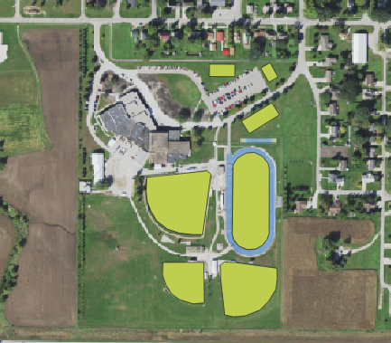 --- #### Downloading OSM Geometry from Website 1. Visit https://www.openstreetmap.org 1. Zoom to location and select Export 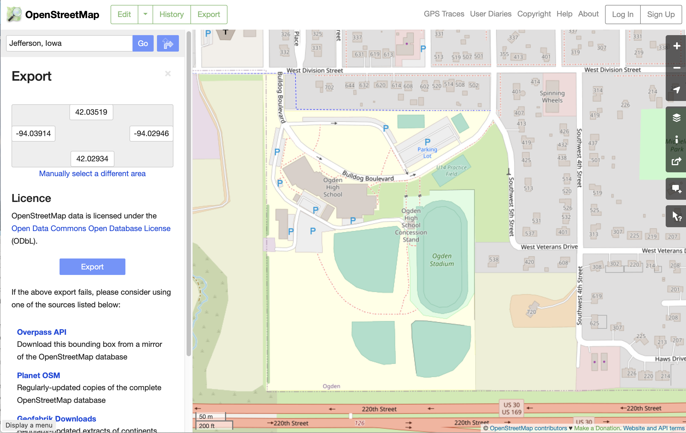 --- #### Editing OpenStreetMap - <a href="tasksheets/OSM_Sidewalks_Tasksheet.pdf" target="_blank">OSM_Sidewalks_Tasksheet</a> - <a href="tasksheets/OSM_iD_Editor_V3.pdf" target="_blank">OSM iD Editor V3</a> <img src="tutorials/day2/editingOSM.png" alt="" style="width: 90%;"/> --- #### OpenStreet Map Task Campaign - <a href="https://tasks.teachosm.org/project/1082" target="_blank"> https://tasks.teachosm.org/project/1082</a> 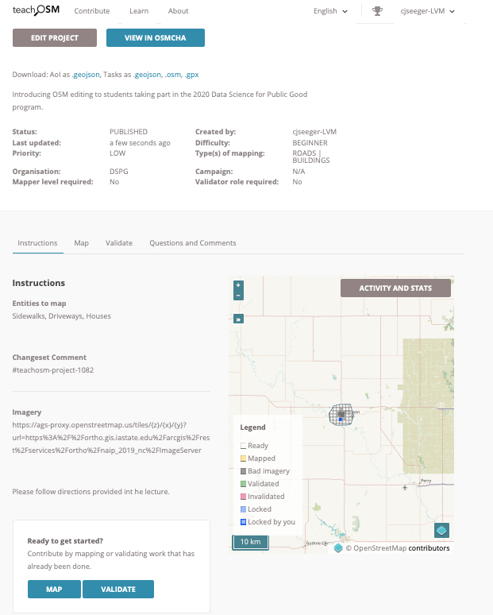 --- #### Addressing: What3Words Last Week we discussed addressing and I thought this was interesting. https://en.wikipedia.org/wiki/What3words Find oyur three words https://what3words.com/clip.apples.leap 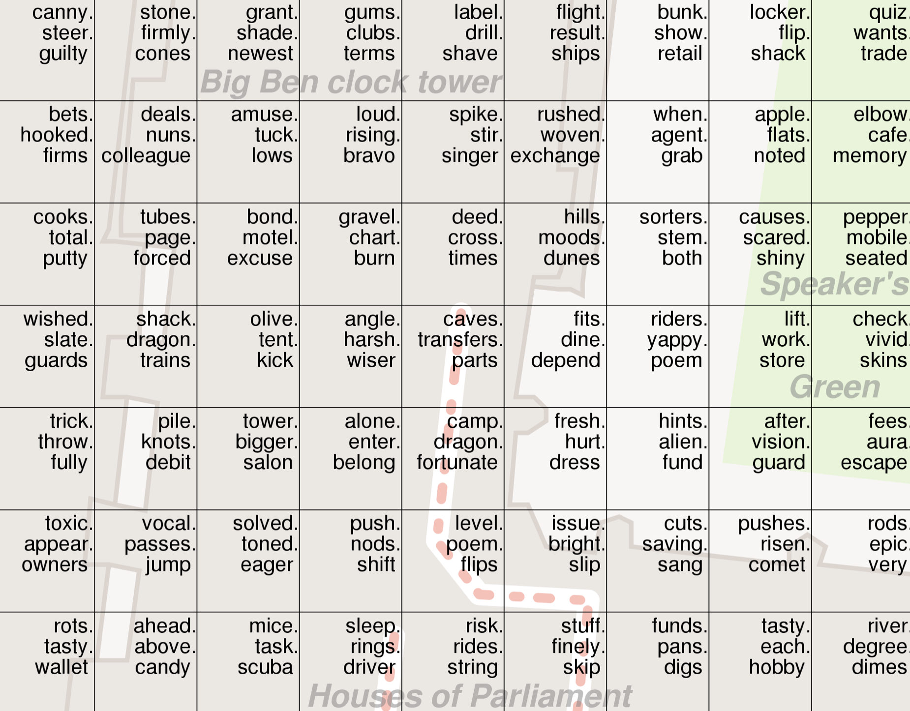 --- #### Importing data 1. Importing Data 1. Aerial and reference imagery 1. Importing Point Data (and Symbolizing Points) 1. Digitizing data 1. Geocoding --- #### Geocoding Plugins 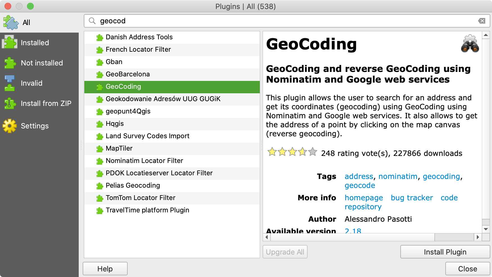 --- #### Geocoding Geocoding using the US Census https://geocoding.geo.census.gov 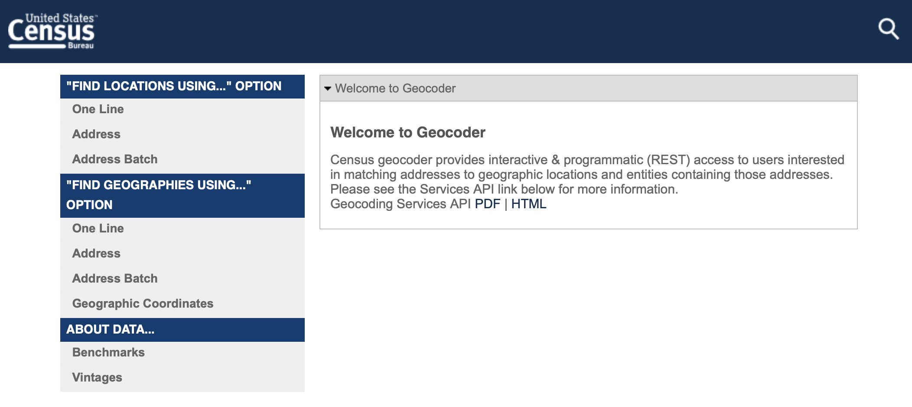 --- #### Geoprocessing - Midwest Regions 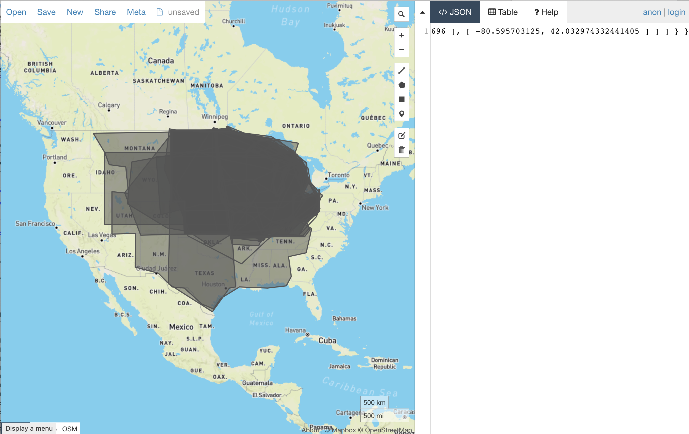 --- #### Geoprocessing - Midwest Regions 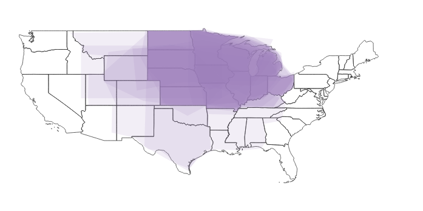 --- #### Geoprocessing - Midwest Regions --- #### Geoprocessing - Buffers 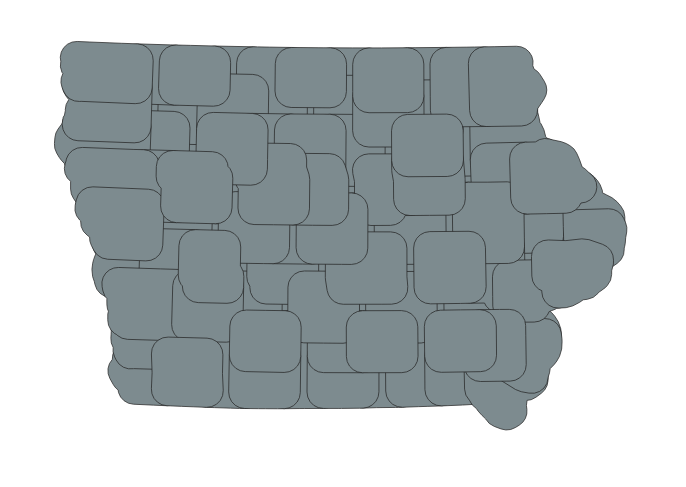 --- #### Geoprocessing - Clipping 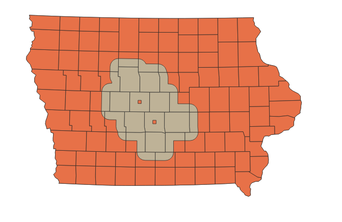 --- #### Map Layout and Export https://colorbrewer2.org/#type=sequential&scheme=BuGn&n=3 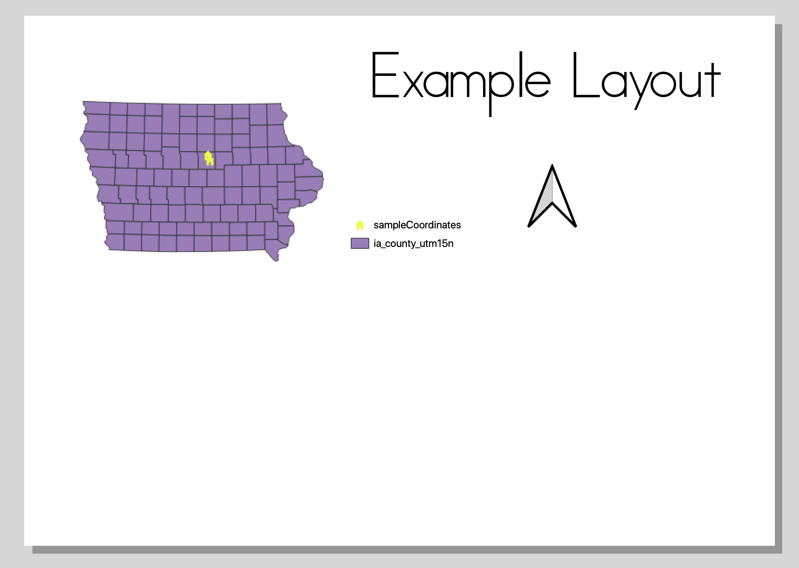 --- #### Leaflet.js and QGIS Plugin for making Leaflet Maps 1. https://leafletjs.com is a web mapping technology that has a plugin for R and QGIS 1. Kelsey used Leaflet in her Web Mapping course this Spring https://kvanselous.github.io/CRP558/FinalProject/ 1. <a href="tasksheets/PM2082-20k - QGIS - QGIS2Web.pdf" target="_blank">QGIS - QGIS2Web</a> 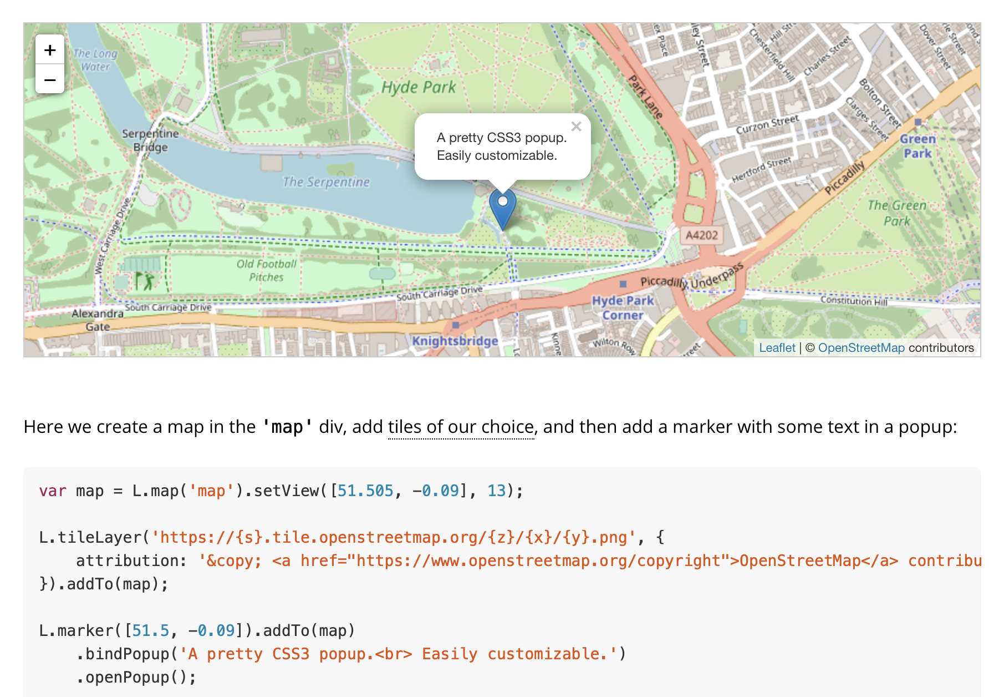 --- #### Wrap Up QGIS Lab and Q & A time ---